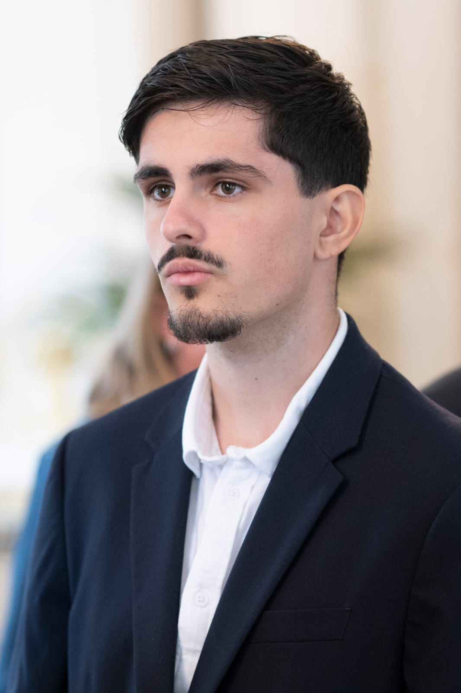

Portfolio — BUT Informatique
Étudiant en première année de BUT Informatique à l'IUT d'Orsay, passionné par la cybersécurité et le développement. Organisé, méthodique et exigeant dans mon travail.

Parcours
Formation en développement, bases de données, algorithmique, réseaux et interaction humain-machine.
Obtenu avec les spécialités Mathématiques et Numérique et Sciences Informatiques.
Réparation de cycles, vente de marchandise et gestion des stocks. Première expérience en milieu professionnel, développant sens du service et rigueur opérationnelle.
Compétences
Réalisations
Situation — Projet libre non guidé réalisé en binôme.
Tâche — Concevoir et développer un jeu de Puissance 4 fonctionnel de A à Z.
Action — Analyse des besoins, découpage en tâches, répartition du travail, développement itératif avec mon binôme.
Résultat — Jeu fonctionnel livré dans les délais, avec gestion de la grille, détection de victoire et interface en console.
Situation — Projet guidé par étapes réalisé en binôme dans le cadre du BUT.
Tâche — Développer un jeu vidéo simpliste en suivant un cahier des charges progressif.
Action — Apprentissage du C++, application des concepts objets, coordination avec le binôme à chaque étape.
Résultat — Jeu finalisé couvrant l'ensemble des fonctionnalités demandées.
Situation — Projet de communication et développement web en binôme.
Tâche — Créer de toutes pièces le site d'une agence de voyage fictive, de la conception à la mise en ligne.
Action — Définition de la charte graphique, structuration des pages en HTML/CSS, répartition claire des tâches.
Résultat — Site complet et cohérent présentant l'agence, ses destinations et ses services.
Situation — Projet réalisé seul puis en binôme à partir d'informations récoltées auprès d'une entreprise.
Tâche — Modéliser et implémenter une base de données relationnelle à partir de besoins réels.
Action — Recueil d'informations, modélisation (MCD/MLD), création et alimentation de la base sous Oracle.
Résultat — Base de données fonctionnelle répondant aux besoins identifiés.
Situation — Projet en groupe de 4 personnes.
Tâche — Identifier et formaliser les besoins d'un commanditaire en vue de la réalisation d'un site internet.
Action — Interviews, synthèse des besoins, rédaction du cahier des charges, coordination en équipe.
Résultat — Document de recueil de besoins structuré et validé, prêt pour la phase de développement.
Projet professionnel
Court terme
Trouver un stage d'Avril à Juillet 2027 dans le domaine informatique, idéalement en développement ou en cybersécurité, pour acquérir ma première expérience professionnelle significative.
Moyen terme
Intégrer une école d'ingénieur — Telecom SudParis en priorité — pour me spécialiser dans la cybersécurité et approfondir mes compétences techniques.
Long terme
Exercer un métier d'ingénieur en cybersécurité ou en développement dans un environnement exigeant, où la rigueur et la résolution de problèmes complexes sont au cœur du quotidien.
Centres d'intérêt
Football — aussi bien en tant que pratiquant que spectateur. Suivi régulier des compétitions, sens du collectif et de la tactique.
Passionné de mangas et d'animes depuis de nombreuses années. Amateur de jeux vidéo, univers qui nourrit également mon intérêt pour le développement.
Écoute quotidienne de rap et R&B. La musique accompagne mon travail et ma créativité au quotidien.
Contact